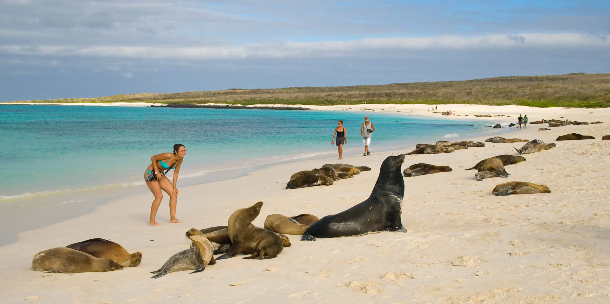
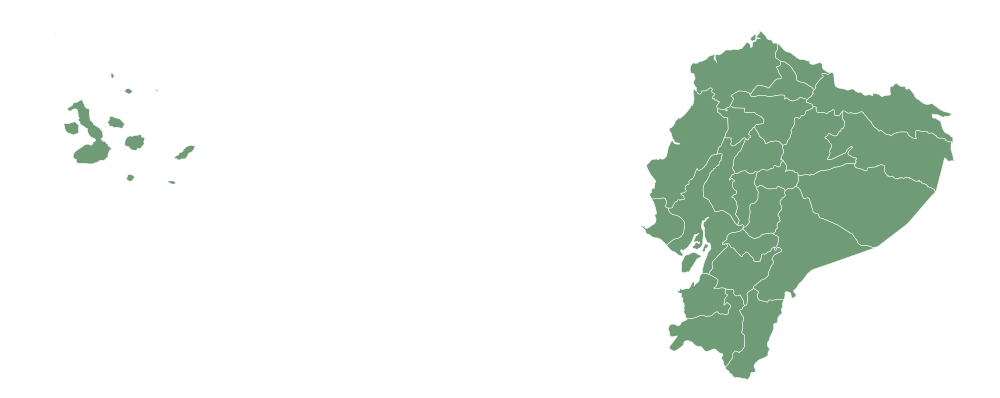
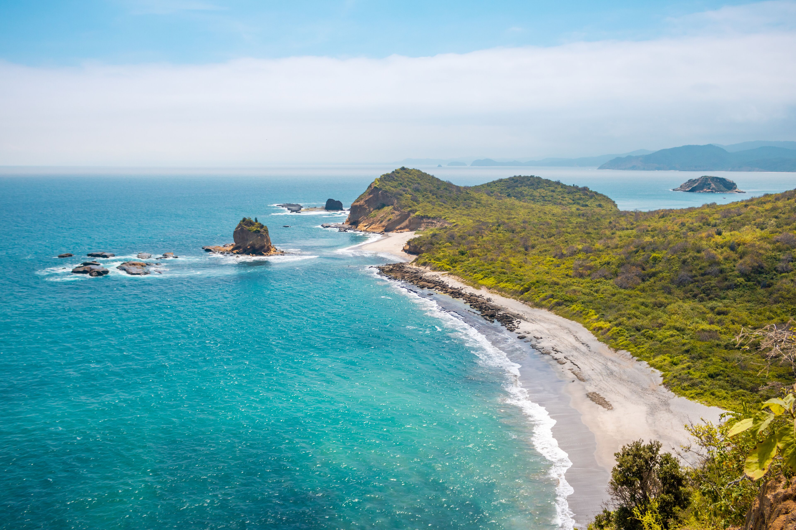
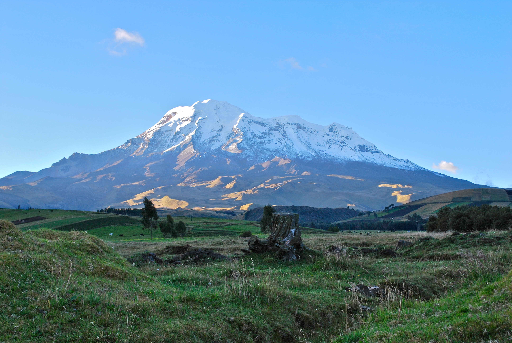
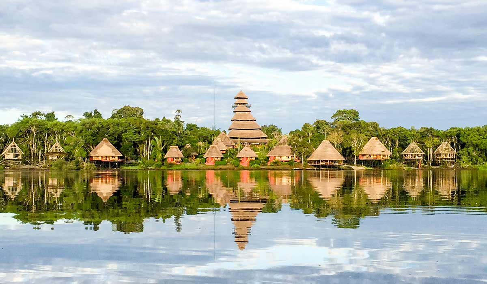
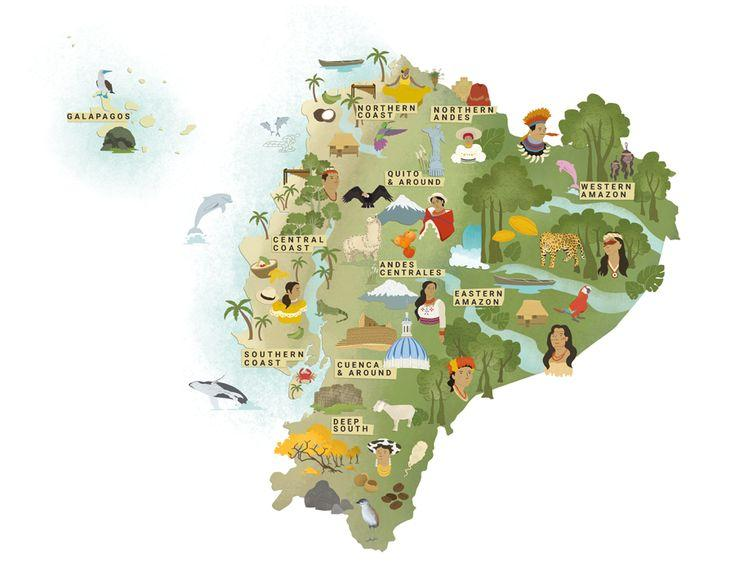
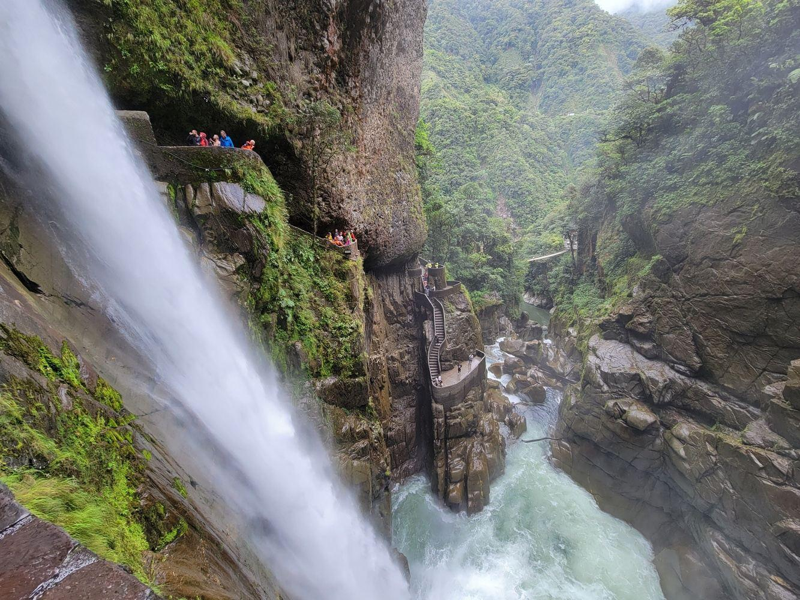
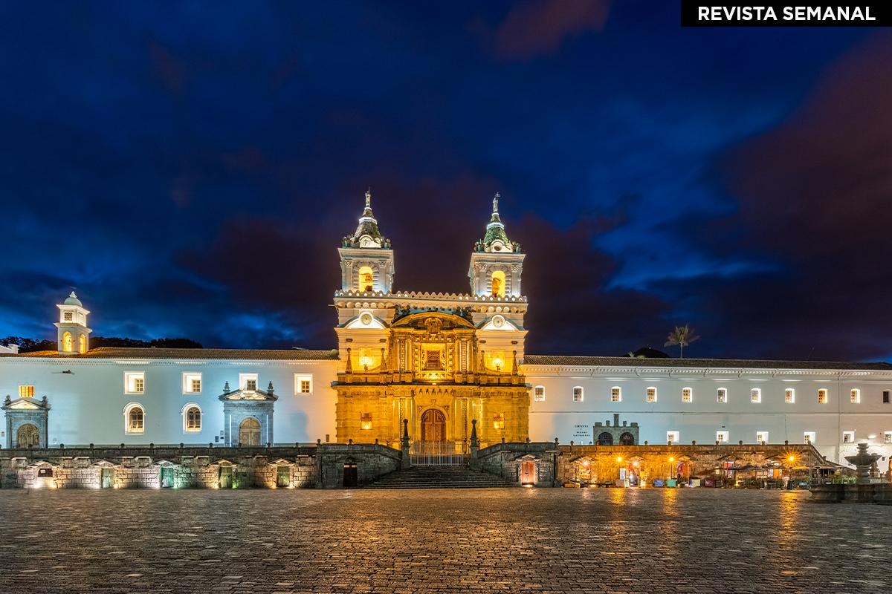
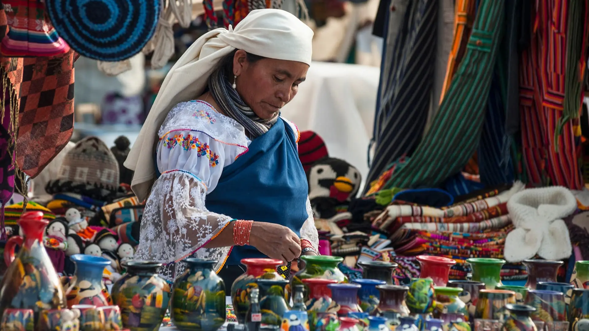
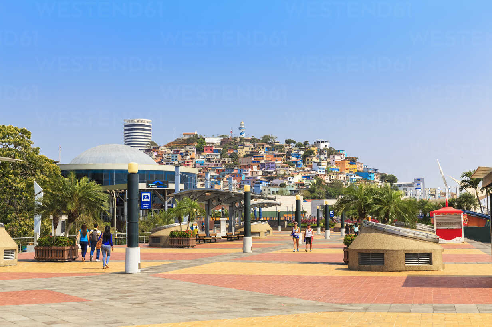

Galápagos
Un paraíso natural en medio del Pacífico.
Islas volcánicas, fauna única y playas de aguas cristalinas.
Biodiversidad · Snorkel · Islas volcánicas
Explorar región →UN PAÍS, CUATRO MUNDOS
Naturaleza, cultura y aventura en un solo lugar.
Explora nuestros destinos
DESCUBRE NUESTRA DIVERSIDAD
Cuatro regiones, mil experiencias. Descubre la diversidad natural y cultural que hace único a Ecuador.

Islas volcánicas, fauna única y playas de aguas cristalinas.
Biodiversidad · Snorkel · Islas volcánicas
Explorar región →
Descubre paisajes costeros, gastronomía y pueblos llenos de cultura.
Playas · Gastronomía · Cultura
Explorar región →
Volcanes, ciudades históricas y paisajes de montaña.
Volcanes · Cultura · Montañismo
Explorar región →
Explora bosques tropicales, ríos y una extraordinaria diversidad natural y cultural.
Biodiversidad · Ríos · Naturaleza
Explorar región →
PLANIFICA TU RECORRIDO
Consulta el mapa vial turístico 2026 y descubre las rutas que conectan nuestros destinos.
Explorar mapa vial turístico ↗LUGARES QUE TE SORPRENDERÁN
Desde paisajes volcánicos hasta playas paradisíacas, Ecuador ofrece experiencias únicas para todos los viajeros. Recorre sus diferentes regiones, descubre su riqueza natural y cultural, y déjate sorprender por lugares que hacen de este país un destino extraordinario.
Descubre un auténtico santuario natural en medio del océano Pacífico, reconocido mundialmente por su extraordinaria biodiversidad. Sus paisajes de origen volcánico, playas de aguas cristalinas y especies únicas ofrecen experiencias inolvidables. Podrás observar tortugas gigantes, lobos marinos y aves endémicas, además de disfrutar actividades como el snorkel, el buceo y la exploración de sus islas.
Conocer más ↗Disfruta de uno de los destinos costeros más conocidos del Ecuador, famoso por sus extensas playas, olas ideales para practicar surf y ambiente lleno de energía. Montañita combina aventura, gastronomía local y una atractiva vida nocturna. Sus atardeceres frente al océano y la calidez de su ambiente la convierten en una excelente opción para quienes buscan descanso y diversión junto al mar.
Conocer más ↗Maravíllate con una de las postales naturales más impresionantes de los Andes ecuatorianos. Esta laguna se encuentra dentro del cráter de un volcán y destaca por sus aguas de tonalidades turquesas y esmeraldas, rodeadas de montañas. Es un destino ideal para realizar senderismo, contemplar paisajes panorámicos, recorrer sus miradores y conocer las comunidades indígenas que conservan las tradiciones de esta región.
Conocer más ↗Adéntrate en uno de los espacios de mayor biodiversidad del planeta, ubicado en el corazón de la Amazonía ecuatoriana. Sus extensos bosques tropicales albergan una enorme variedad de plantas, aves, mamíferos y otras especies. A través de recorridos guiados podrás explorar senderos, navegar por ríos amazónicos y conocer la riqueza cultural de las comunidades que habitan este extraordinario entorno natural.
Conocer más ↗ECUADOR EN IMÁGENES
Un recorrido visual por los paisajes, tradiciones, sabores y experiencias que hacen de Ecuador un destino extraordinario.




Conoce nuestras opciones y planifica tu próxima aventura.
| Paquete | Destino | Duración | Precio | Servicios incluidos |
|---|---|---|---|---|
| Paquete 1 | Galápagos | 3 días / 2 noches | $150 | Alojamiento y transporte |
| Paquete 2 | Sierra | 4 días / 3 noches | $250 | Alojamiento y alimentación |
| Paquete 3 | Amazonía | 5 días / 4 noches | $350 | Transporte y excursiones |
Organiza tus experiencias y descubre cada destino.
Llegada y bienvenida al destino.
Recorrido por los principales atractivos turísticos.
Actividades recreativas y experiencias culturales.
Estamos aquí para ayudarte a planificar tu próxima aventura.